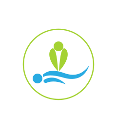

Klassische Massage Ganz- & Teilkörper
Eine der bekanntesten und am häufigsten angewendeten Massagetechniken. Sie basiert auf einer Vielzahl gezielter Handgriffe, die je nach Bedarf sanft bis kräftig durchgeführt werden.
Wieder in Balance – mit gezielten Massagen zu mehr Wohlbefinden
Gewerbliche & Freiberufliche Heilmasseurin

Hier folgt in Kürze eine persönliche Vorstellung von Carmen Knichtl, ihrem Werdegang und ihrer Arbeitsweise als gewerbliche und freiberufliche Heilmasseurin in Altach.
Individuell abgestimmte Therapien für Regeneration, Schmerzlinderung und Entspannung.
Eine der bekanntesten und am häufigsten angewendeten Massagetechniken. Sie basiert auf einer Vielzahl gezielter Handgriffe, die je nach Bedarf sanft bis kräftig durchgeführt werden.
Eine sanfte Technik, die besonders bei Schwellungen und Ödemen eingesetzt wird, um den Lymphfluss zu fördern, Schwellungen zu reduzieren und die körpereigene Entgiftung zu aktivieren.
Nutzt Vakuumgläser, um die Durchblutung und den Lymphfluss zu fördern, Muskelverspannungen zu lösen und Schmerzen zu lindern.
Löst Verklebungen im Bindegewebe, um Spannungen und Schmerzen nachhaltig zu reduzieren.
Verwendet erhitzte Steine, deren Wärme tief in die Muskulatur eindringt. Dies verbessert die Durchblutung, löst Verspannungen und versetzt den Körper in einen Zustand tiefer Entspannung. Wird mit der klassischen Massage kombiniert.
Gezielte Teilkörperbehandlung
Umfassende Ganzkörper- oder Intensivbehandlung